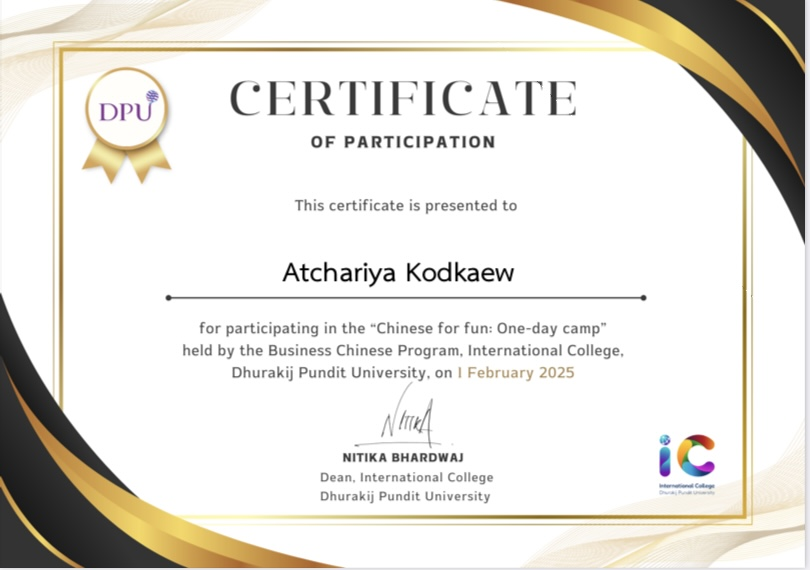
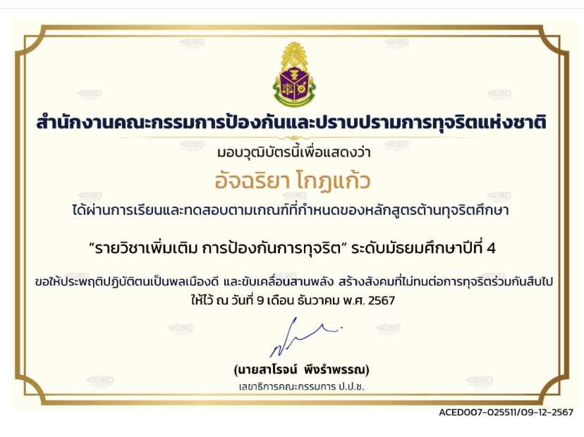

⚖️ ผลงานและกิจกรรมที่โดดเด่น
กิจกรรมร้องประสานเสียงภาษาจีน
ได้เข้าร่วมเป็นส่วนหนึ่งในการขับร้องประสานเสียงภาษาจีนเนื่องในโอกาสวันตรุษจีน ซึ่งทำให้ได้พัฒนาทักษะภาษาจีน และรวมถึงทักษะการทำงานเป็นทีมที่เป็นสิ่งสำคัญในการเรียนคณะนิติศาสตร์อีกด้วย
ผู้นำเชียร์สี (กีฬาสีประจำปี)
ได้รับความไว้วางใจให้ทำหน้าที่เป็นผู้นำเชียร์ (Cheerleader) ในงานแข่งขันกีฬาสีประจำปีของโรงเรียน หน้าที่นี้ต้องใช้ความเป็นผู้นำ ดิฉันได้เรียนรู้วิธีการแก้ปัญหาเฉพาะหน้า การสื่อสารเพื่อสร้างแรงจูงใจให้เพื่อนร่วมทีม รวมถึงความสามัคคีที่ทำให้โชว์ออกมาสมบูรณ์แบบที่สุด ประสบการณ์นี้ตอกย้ำให้เห็นถึงศักยภาพในการเป็นผู้นำและการทำงานร่วมกับผู้อื่น

เกียรติบัตร: เข้าร่วมอบรมค่ายพัฒนาภาษาจีน
เกียรติบัตรฉบับนี้ได้รับจากการเข้าร่วมค่ายพัฒนาภาษาจีน โดยมหาวิทยาลัยธุรกิจบัณฑิตย์ เป็นเครื่องยืนยันความมุ่งมั่นในการแสวงหาความรู้จากการทำกิจกรรมต่างๆ เพื่อเตรียมความพร้อมสำหรับการศึกษาในระดับอุดมศึกษาที่เข้มข้น โดยเฉพาะอย่างยิ่งในคณะนิติศาสตร์ที่ต้องอาศัยการแสวงหาความรู้เพิ่มเติม

เกียรติบัตร: อบรมป้องปรามการทุจริต (ป.ป.ช.)
ได้รับเกียรติบัตรจากการเข้าร่วมการอบรมป้องปรามการทุจริต จัดโดยสำนักงานคณะกรรมการป้องกันและปราบปรามการทุจริตแห่งชาติ (ป.ป.ช.) การอบรมครั้งนี้ทำให้ดิฉันมีความรู้ความเข้าใจเกี่ยวกับกฎหมายและมาตรการป้องกันการทุจริต ตระหนักถึงความสำคัญของความโปร่งใสและจริยธรรม ซึ่งเป็นคุณสมบัติที่สำคัญอย่างยิ่งสำหรับนักกฎหมายในอนาคตที่ต้องยึดมั่นในความถูกต้องและธำรงไว้ซึ่งความยุติธรรม
เกียรติบัตร: โครงการอบรมแกนนำ อย.น้อย ปีการศึกษา 2568
เข้าร่วมโครงการอบรมแกนนำ อย.น้อย ประจำปีการศึกษา 2568 กิจกรรมนี้ช่วยปลูกฝังความรับผิดชอบต่อสังคมในด้านการคุ้มครองผู้บริโภค ให้ความรู้เกี่ยวกับการบริโภคผลิตภัณฑ์สุขภาพอย่างปลอดภัยและถูกกฎหมาย นอกจากนี้ยังได้ฝึกทักษะการเป็นผู้นำในการเผยแพร่ข้อมูลที่ถูกต้องให้กับคนในชุมชน ซึ่งสอดคล้องกับหลักการคุ้มครองสิทธิขั้นพื้นฐานของประชาชนตามกฎหมาย
เกียรติบัตร: โครงการอบรมวัยรุ่นยุคใหม่ใส่ใจสุขภาพจิต ปีการศึกษา 2567
ได้รับเกียรติบัตรจากการเข้าร่วมโครงการอบรมวัยรุ่นยุคใหม่ใส่ใจสุขภาพจิต ประจำปีการศึกษา 2567 การเข้าร่วมโครงการนี้ทำให้ดิฉันได้เรียนรู้วิธีการจัดการความเครียด เข้าใจกลไกทางจิตวิทยา และเห็นอกเห็นใจผู้อื่น (Empathy) มากยิ่งขึ้น ทักษะการทำความเข้าใจเพื่อนมนุษย์เป็นพื้นฐานที่ดีในการเรียนวิชานิติศาสตร์ เพราะกฎหมายเกี่ยวข้องกับพฤติกรรมและข้อพิพาทของคนในสังคม การมีสุขภาพจิตที่ดีและเข้าใจผู้อื่นจะช่วยให้สามารถวิเคราะห์ปัญหาได้อย่างรอบด้าน